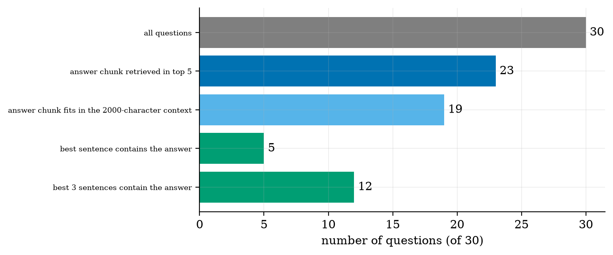
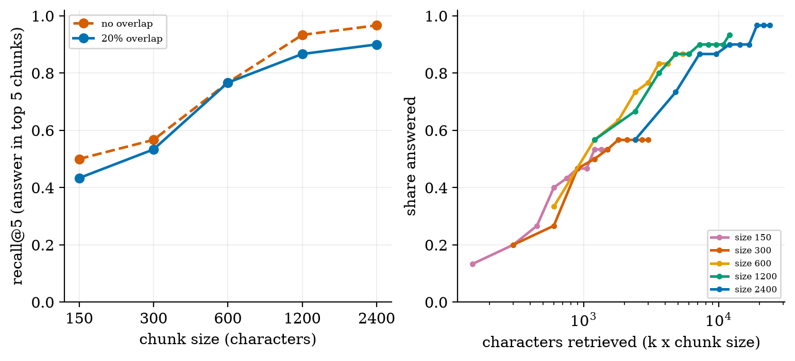
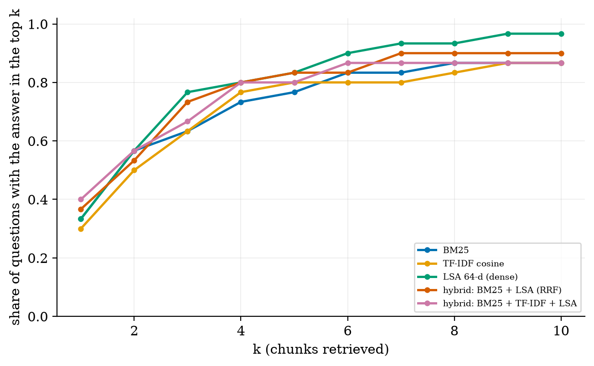
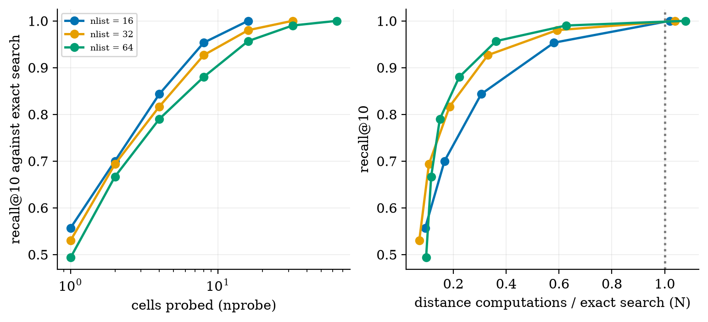
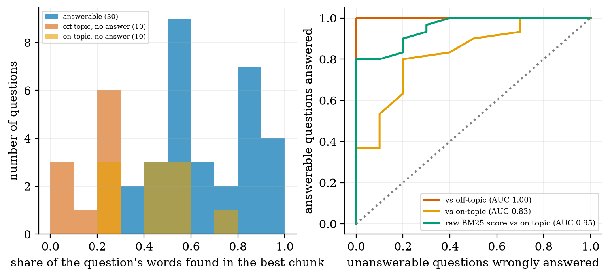

explain why an LLM needs retrieval (knowledge limits, hallucination, no provenance) and draw the RAG pipeline;
implement and compare BM25, TF-IDF and a dense (LSA) retriever, fuse them, and measure with recall@k and MRR;
choose chunk size and overlap with an equal-cost comparison, not a misleading one;
explain how a vector index (IVF) trades accuracy for speed, and derive its cost;
decide when to answer and when to say “I don’t know”, and measure how well a simple signal does it.
The big picture
An LLM cannot look things up. Ask about your college’s rules and it writes something plausible. RAG turns the task into an open-book exam: retrieve the right passages, then generate an answer from them. The knowledge becomes editable: change a document, not the model.
The pipeline: ingest → chunk → index → retrieve → build context → generate → evaluate. The answer can be lost at every stage.
Measured on this course’s own text (30 questions): 23 have the answer chunk in the top 5; 19 still have it after the context budget; a crude generator that quotes the best sentence is right for only 5. Three different stages fail, so judging a RAG system by its final answers alone hides the cause.
Be sceptical of small differences. With 30 questions one question is 3.3 points. BM25, TF-IDF and the dense retriever differ by 1–3 questions: not distinguishable (paired 95% interval for LSA − BM25: [−0.07, +0.20]). And at equal retrieved text, “bigger chunks are better” disappears.
Key equations
BM25: rare words count more, repeats saturate, long chunks are penalised.
Cosine similarity between a query vector and a chunk vector.
Reciprocal rank fusion: combine retrievers using ranks only.
IVF index cost, and the best number of cells.
Retrieval metrics.
Figures

Where 30 questions are lost: retrieval (7), the context budget (4) and the final answer step (7).

Left: recall@5 rises with chunk size. Right: on an equal-text axis the advantage disappears; at ~1200 characters every size scores 0.50–0.57.

Recall@k for BM25, TF-IDF, LSA (dense) and hybrids: differences of 1–3 questions out of 30.

An IVF index on 806 real chunk vectors: recall 0.88 at 22% of the work with 64 cells and 8 probed.

Saying “I don’t know”: perfect against off-topic questions, only AUC 0.83 against near-miss questions that share vocabulary.
Try it in the playground
Each link opens the widget with good starting settings. Every option has a plain-English label and a one-line help text.
Ask the course (retrieval)
A real search over the text of Units 1–4, in your browser: BM25 or TF-IDF, chunk size, overlap, and an “I don’t know” threshold.
Plain NumPy again; the zip contains the course text and 50 evaluation questions. After downloading and unzipping the All code (.zip):
pip install -r requirements.txt
python codes/rag/rag_np/rag_np.py # builds 245 chunks, prints BM25 recall and MRR
python codes/rag/rag_np/tests/test_rag_np.py # 10 tests, prints: ok
python figures/fig03_ivf.py # reproduces the IVF figure
To build RAG over your own documents, replace the files in codes/rag/rag_np/data/ (named u1.txt, u2.txt, …) and write your own questions in eval_queries.json. For real neural embeddings and a real chat model use the Colab notebook (written but not executed during authoring; its two models were confirmed to exist on the Hugging Face hub).
An honest note. The dense retriever here is LSA, a classical method, because no neural model was available when the course was written. The JavaScript widget gives exactly the same rankings as the Python code (checked on 3 chunkings and 10 queries).
Self-check
Answer in your head first, then click to reveal.
Why does a language model need retrieval? Give two reasons.
Knowledge limits (facts missing from, or out of date in, its weights) and no provenance (it cannot cite a source): both lead to hallucination.
What does BM25 reward, and what does it ignore?
Rare query words that occur in the chunk (with saturation and length normalisation). It ignores meaning, word order and synonyms.
How can a chunk boundary make a question unanswerable?
If the gold phrase is split across two chunks, no single chunk contains it: 2–3 of 30 questions at 150–300 characters without overlap.
Why compare chunk sizes at equal retrieved text instead of equal k?
Bigger chunks bring more text per result; recall per character retrieved is the fair measure.
What does an IVF index give up for speed?
Exactness: the true nearest neighbour can lie in a cell that is not searched, so recall is below 1.
Why was ‘AUC = 1.0’ for off-topic questions misleading?
Off-topic questions are an easy negative class. Near-miss questions that share the corpus’s vocabulary gave only 0.83.